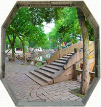

- 【退思园】
- 退思园，建于清光绪十一年至十三年（公元1885-1887年）。园主任兰生，字畹香，号南云。光绪十年（公元1884年），内阁学士周德润勋任兰生盘踞利津、营私肥已。光绪十一年（公元1885年）正月，解任候处分，旋因查所勋都不实，部议革职位。任兰生落职回乡，花十万两银子建造宅园，取名“退思”。其弟任艾生哭兄诗有“题取退思期补过，平泉草木漫同看”之句，可见园名取《左传》“进思尽忠，退思补过”之意。退思园的设计者袁龙，字东篱，诗文书画皆通。他根据江南水乡特点，因地制宜，精巧构思，历时两年建成此园。园占地仅九亩八分，既简朴无华，又素静淡雅，具晚清江南园林建筑风格。退思园布局独特，亭、台、楼、阁、廊、坊、桥、榭、厅、堂、房、轩一应俱全，并以池为中心，诸建筑如浮水上。格局紧凑自然，结合植物配置，点缀四时景色，给人以清澈、幽静、明朗之感。
- 
- 【三桥】
- 三桥是指太平桥、吉利桥和长庆桥。太平桥，跨于东柳、漆字两圩。桥为梁式，小巧玲珑，桥上有联一副，曰：“永济南北太平路，落成嘉庆廿三年。吉利桥跨漆字、两圩，处太平桥、长庆桥中间。桥型为拱形桥，桥之南北两侧都有桥联，南侧一联曰：浅渚波光云影，小桥流水江村。北侧一联曰：“吉利桥横形半月，太平桥峙映双虹。站在吉利桥北，环顾三桥，河水明净如镜，小桥如飞虹卧波，波光桥影，美不胜收。长庆桥，俗名谢家桥，跨东柳、两圩，旧名福建桥，又称广利桥。桥上有桥联一副，曰：公解囊金成利济，好留柱石待标题。桥联表明建桥者义结同心，为民造桥，功在当代，利在千秋。